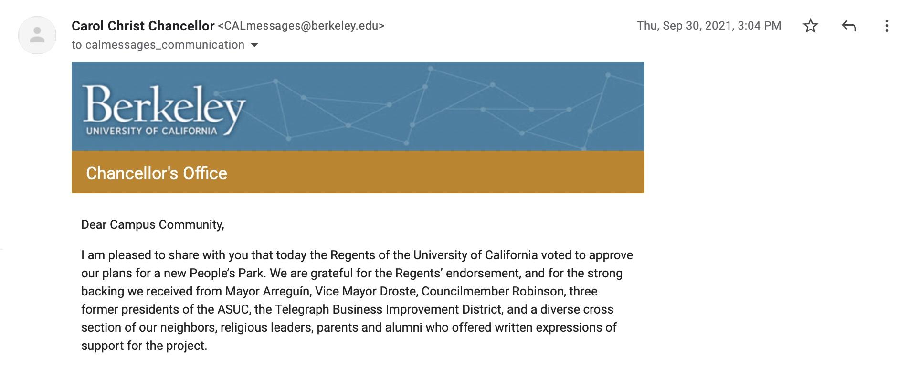

# A tibble: 6 × 5
name state pop2000 pop2010 pop2017
<chr> <fct> <dbl> <dbl> <int>
1 Alameda County California 1443741 1510271 1663190
2 Alpine County California 1208 1175 1120
3 Amador County California 35100 38091 38626
4 Butte County California 203171 220000 229294
5 Calaveras County California 40554 45578 45670
6 Colusa County California 18804 21419 21805Introduction: Part 2
STAT 20 UC Berkeley
First Things First
Berkeley Summer Sessions Stat 20
Programming/Coding
Potential Coding Post on Ed
Would contain links to code used during class
Code you do not need to know for this week (or in the course)
will be commented around
How does this sound?
Berkeley Summer Sessions Stat 20
Labs
First Lab Sections are today!
Today’s lab will go over the basics of R and RStudio
- Question One
Tomorrow’s lab will focus on material for Questions Two and Three
Recap
Answering Questions with Data
Yesterday we saw that:
- The exact question you want to answer completely determines what the data you collect should look like.
Let’s tackle another example. This one comes from a dataset in the
usdatapackage referenced in the IMS textbook, chapter five.
Answering Questions with Data
- Here is the question:
How have the population in California counties changed from 2000 to 2010 to 2017?
Sketch a provisional data-set that could answer this question.
- Exercise
Answering Questions with Data
This data set is called
countyand belongs tousdatapackage.There are actually two viable ways that the data set can be “formatted” in!
Answering Questions with Data
- Here is the “format” that was compiled by the authors of the data set and what you will see when you load in the data.
Answering Questions with Data
What if we want to condense the year columns into one year column?
This gives rise to the second “format.”
# A tibble: 6 × 3
name Year Pop
<chr> <chr> <dbl>
1 Autauga County 2000 43671
2 Autauga County 2010 54571
3 Autauga County 2017 55504
4 Baldwin County 2000 140415
5 Baldwin County 2010 182265
6 Baldwin County 2017 212628Answering Questions with Data
Since the former dataset had more columns, we would call it a wide dataset.
Since the latter had less columns because we condensed, we call it a long dataset.
Both formats have their respective advantages and disadvantages.
We will discuss how to work with these two formats next week. For now, I just wanted to show you guys this phenomena.
Answering Questions with Data
Yesterday we saw that:
- The exact question you want to answer completely determines what the data you collect should look like.
Answering Questions with Data
Yet, this goes both ways as well. If you are given a data set, it is useful to think about what questions you can answer with it (and what questions you cannot answer with it).
In fact, these are more likely to be practical questions for you since most likely you will receive data sets to work with: maybe at your company or even in this class with the labs.
Here is another example. This time I will preview a data set from a package called
palmerpenguinswhich is available to you on the course server.The documentation for the dataset is available here.
Answering Questions with Data
library(palmerpenguins)
# Load the data set and print the first few rows
data(penguins)
head(penguins, n = 6)# A tibble: 6 × 8
species island bill_length_mm bill_depth_mm flipper_length_… body_mass_g sex
<fct> <fct> <dbl> <dbl> <int> <int> <fct>
1 Adelie Torge… 39.1 18.7 181 3750 male
2 Adelie Torge… 39.5 17.4 186 3800 fema…
3 Adelie Torge… 40.3 18 195 3250 fema…
4 Adelie Torge… NA NA NA NA <NA>
5 Adelie Torge… 36.7 19.3 193 3450 fema…
6 Adelie Torge… 39.3 20.6 190 3650 male
# … with 1 more variable: year <int>You can also view the data set on the course server.
Click on the little spreadsheet in the top right corner of the screen once you load the
penguinsdata and see it pop up thereThis might be better to do since you can see the different species of penguins and the different islands on which they live
Answering Questions with Data
For the left side of the room: What question could you answer with this data?
- Exercise
For the right side of the room: What question could you not answer with this data? What extra data would you need?
- Exercise
Logistics
Berkeley Summer Sessions Stat 20
Let’s decide office hours!
Berkeley Summer Sessions Stat 20
Ed: The Course Forum
Access it by clicking here
This is your first point of contact for any questions regarding the course!
- Please post publicly when appropriate!
Check here for the weekly course objectives
The material we want you to take away each week.
All of this material will be covered in lecture
Break
Introduction
Course Goals:
After taking this course, you will be able to:
Construct and critique claims made using data.
Perform analysis on a data set in a semi-formal setting.
Constructing a claim
Constructing a claim

Constructing a claim

Constructing a claim
Constructing a claim

Constructing a claim
We then performed a demo in an RMarkdown file on the course server on how to obtain some of the numbers cited in the survey from the actual (namely, the percent margins between support and oppose, before and after participants knew the information about the People’s Park project) data-set.
The details of the code are not necessary for you to know right now. The main takeaway is that being able to do statistics on real-world data sets and communicating your results clearly and attractively are the skills that we really want you to get out of the course!
Constructing a claim
- In performing the demo, we touched on the following topics:
The Taxonomy of Data
The Taxonomy of Data
A framework we use to describe the types of variables in a dataset.
Numerical data: data using numbers that don’t correspond to categories
Categorical data: data that corresponds to categories
- The categories can be words or numbers
The Taxonomy of Data
Within these two groups, we have further divisions.
For numerical data, we have:
Discrete data: takes values that have jumps between them
Example: 1, 2, 3, 4, 5,….
Example: 0, 0.5, 1, 1.5, 2, …..
Continuous data: can take any value on the real number line.
Example: height of UC Berkeley students
Example: speed of a baseball pitch
The Taxonomy of Data
Within these two groups, we have further divisions.
For categorical data, we have:
Ordinal data: takes values with a natural ordering
Example: COVID-19 swab test results (Positive, Inconclusive, Negative)
Example: Age groups (18-34, 35-54, 55+)
Nominal data: does not have a natural ordering.
Example: colors of Skittles
Example: favorite boba place of UC Berkeley students
The Taxonomy of Data
Let’s revisit the
penguinsdataset.What are the data types of the following variables in the dataset as they are recorded?:
Species (
species)Flipper Length (
flipper_length_mm)Bill Length (
bill_length_mm)
- Note that in theory, Flipper Length and Bill Length are numerical continuous!
The Taxonomy of Data
We noticed that the two important questions we worked with in the People’s Park (
ppk) data set used the Likert Scale. This is an interesting scale because it can be seen as either numerical discrete or categorical ordinal.Left side of the room: Give an example of situation in which we might want to consider the Likert Scale as numerical discrete.
- Exercise
Right side of the room: Give an example of situation in which we might want to consider the Likert Scale as categorical ordinal.
Help Files
Help Files
If you are ever confused about:
How to use an R function
How to make sense of variables in a data set you’ve loaded in with a package or from the base installation of R
Help files are the way to go.
Help Files
You can access them using the
?The file will pop up in the bottom-right window of your RStudio.
Comments
Used to help others understand your code
Put the
#sign before a line of writing in an R chunkThis is an important habit to pick up for more than one reason:
Invaluable to others using your code
Invaluable to yourself
Comments
- Example:
Packages / Libraries
Packages / Libraries
Packages (and the libraries they are sometimes inside of), offer extra functionality that doesn’t come with the base installation of R
Because the packages don’t come automatically, we have to load them in (just in one place in your document) using
library(PACKAGE_NAME_HERE)We will be using a few different libraries/packages this semester!
The
tidyverselibraryThe
dplyrpackage for data analysis and wranglingThe
ggplot2package for data visualization
The
stat20datapackage includes data sets we will useThe
inferpackage for inferential statistics . . .
End of Lecture

Comments